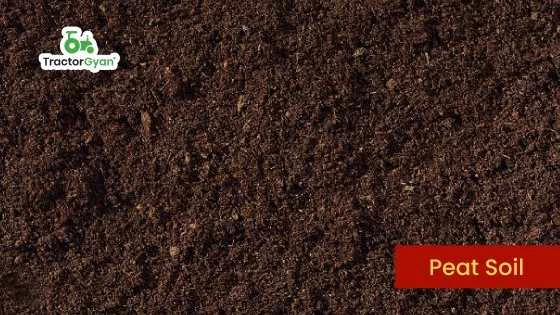

Agri-Solution
One-Stop Solution
One-Stop Solution


DMost common (55%), reddish-yellow, sandy-loamy, good for maize/pulses, found in eastern/central Chhattisgarh.

Clayey, moisture-retentive (Regur), perfect for cotton, wheat, sugarcane; found in volcanic areas like Kawardha, Dhamtari.

A mix of Matasi & Kanhar, clay-loam, all-purpose, good for paddy. .

Coarse, reddish, on uplands, infertile, suitable for millets.

Riverine, deep, fertile, nutrient-rich, ideal for paddy (Mahanadi basin)